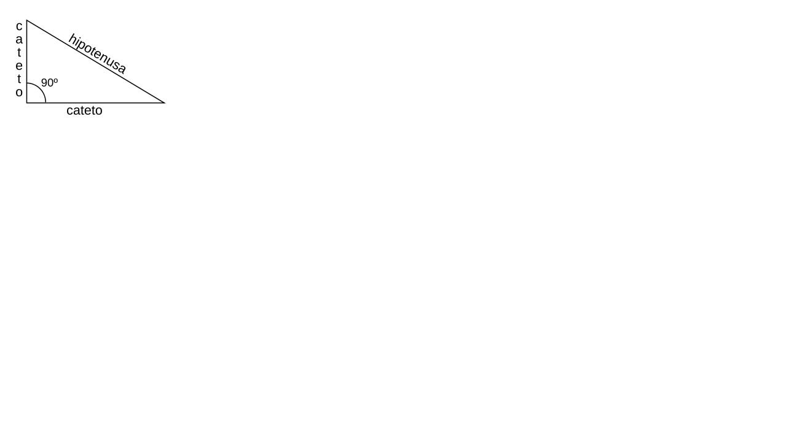

Triángulo Rectángulo
En geometría plana, un rectángulo es un paralelogramo cuyos cuatro lados forman ángulos rectos entre sí. Los lados opuestos tienen la misma longitud. Un rectángulo cuyos cuatro lados tienen la misma longitud es un cuadrado. Ángulos opuestos y lados cogruentes.
Características
En todo triángulo rectángulo se cumple que:
Tiene un ángulo recto (90°).
Tiene dos ángulos agudos que son complementarios, es decir, que la suma de ambos es de 90°.
La hipotenusa siempre es mayor que cualquiera de los catetos.
El cuadrado de la hipotenusa es igual a la suma de los cuadrados de los catetos.
La suma de la longitud de la hipotenusa y el diámetro de un círculo inscrito en el triángulo es igual a la suma de la longitud de los catetos.
Para efectos de área, un cateto cualquiera se puede considerar como base y el otro cateto como altura.
La mediana de la hipotenusa descompone un triángulo rectángulo escaleno en dos triángulos: uno obtusángulo y otro acutángulo, no congruentes pero equivalentes.
La mediana de la hipotenusa de un triángulo rectángulo isósceles lo descompone en dos triángulos rectángulos isósceles congruentes y equivalentes
Dos triángulos rectángulos, con hipotenusa común, y los ángulos rectos en semiplanos opuestos determinados por la recta que contiene a la hipotenusa, forman un cuadrilátero birrectángulo.
La mediana que parte del ángulo recto es igual a la mitad de la hipotenusa.
La altura que parte del vértice del ángulo recto, coincide con un cateto, con tal de considerar al otro cateto como una base.
